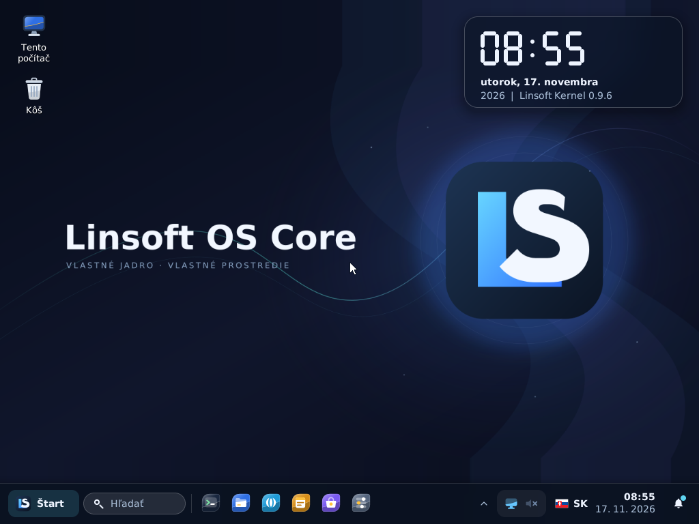
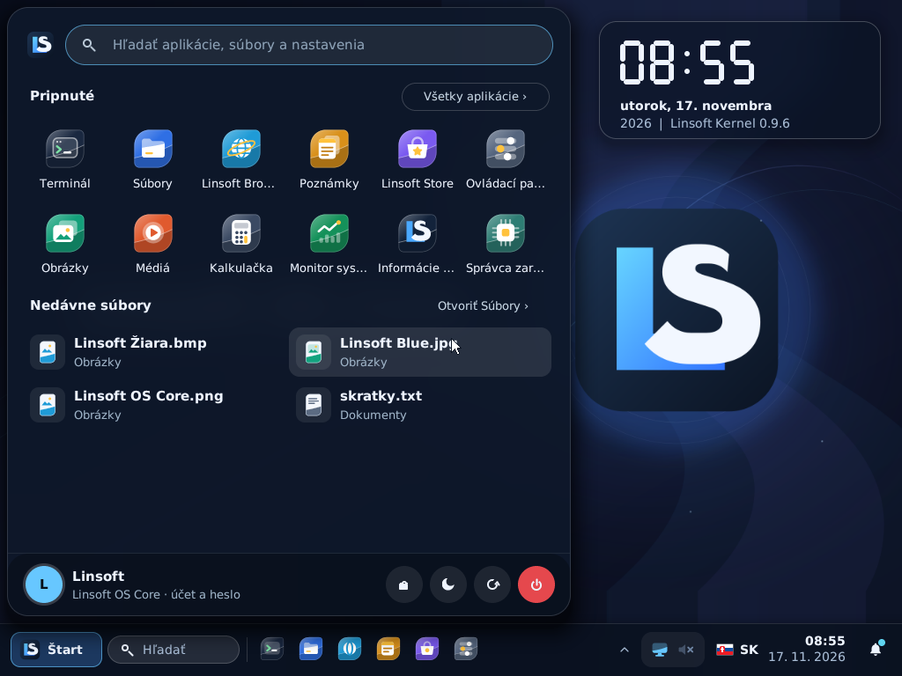
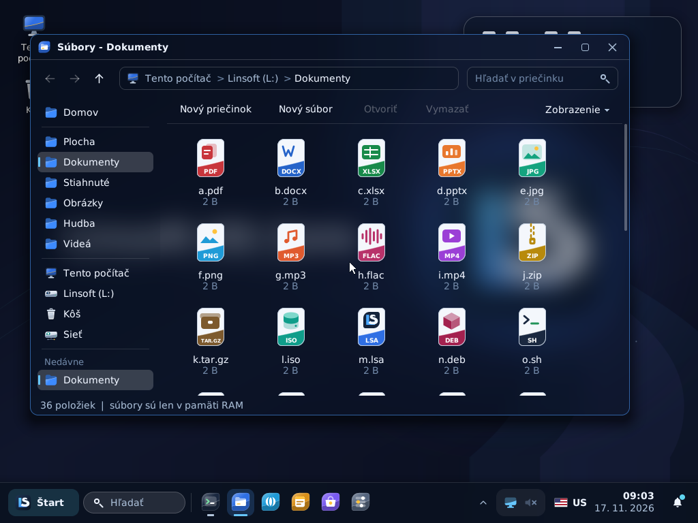
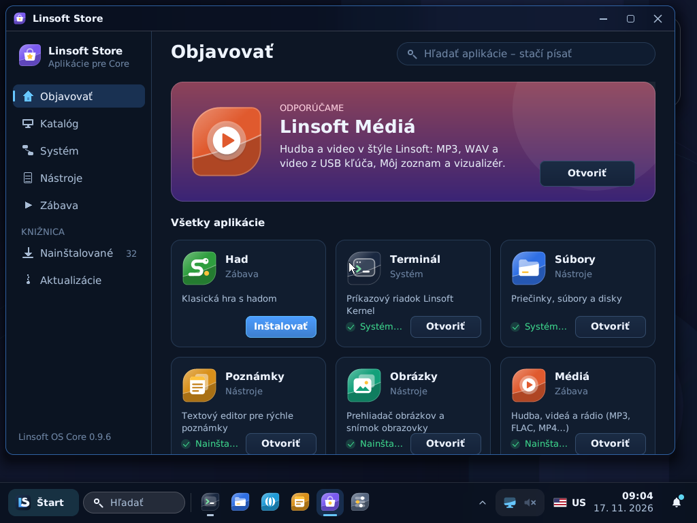
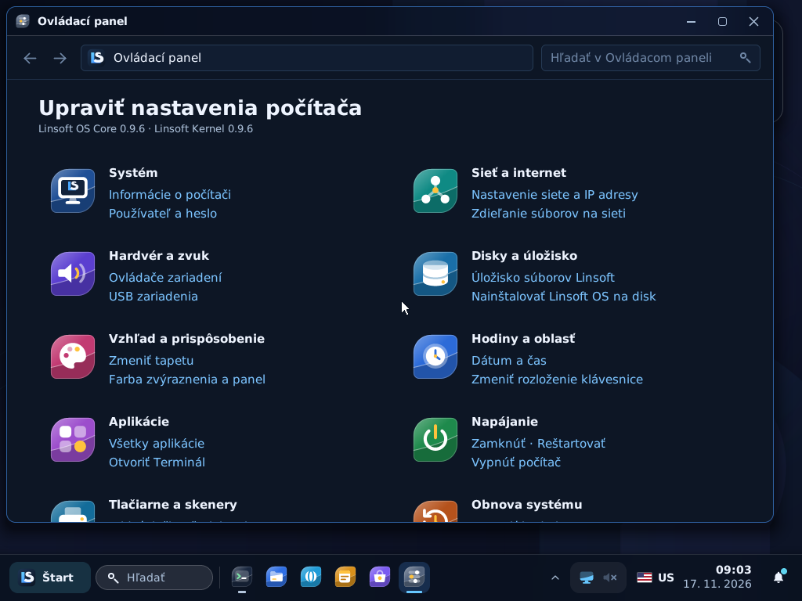
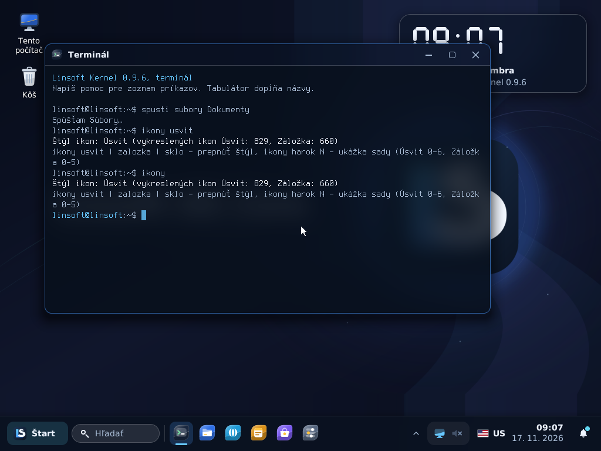

Jadro Linsoft Core™
Napísané od nuly v C. Viac jadier procesora, vlastné súborové systémy LinsoftFS, ext4 aj exFAT, šifrovanie disku.
Linsoft OS Core je operačný systém postavený od nuly na jadre Linsoft Core™. Má vlastné okná, vlastné aplikácie a vlastné ovládače – a keď treba, spustí aj programy z Linuxu.
Zadarmo · x86_64 · UEFI aj BIOS · Secure Boot · vo vývoji, posledná verzia 0.9.7
Napísané od nuly v C. Viac jadier procesora, vlastné súborové systémy LinsoftFS, ext4 aj exFAT, šifrovanie disku.
Nová verzia sa nainštaluje na skúšku. Keď nenaštartuje, systém sa sám vráti na predošlú. Všetko je podpísané.
Antivírus, firewall a ochrana siete v jednej aplikácii. Systém štartuje cez Secure Boot.
Sami sa starajú o počítač: kontrola hardvéru, aktualizácie, zálohy a upratovanie. Väčšie kroky robia len s tvojím súhlasom.
Skutočné snímky obrazovky zo systému, žiadne makety.






Pripravuje sa pre ďalšiu verziu.
V C:\Linsoft vidíš jadro, aplikácie, aktualizácie aj ovládače. Prezerať a kopírovať ich môžeš, meniť ich smie len Linsoft Aktualizácia a Store. Tvoje dokumenty sú na samostatnom oddiele, takže plný disk ani chyba v súboroch nepokazí štart.
Jedným príkazom nainštaluješ Debian 12. Jadro Linsoft Core rozumie linuxovým programom, takže beží bash, apt, Python aj git – bez virtuálneho počítača.
Intel, Realtek, Qualcomm Atheros, MediaTek, Broadcom
LAN Intel a Realtek, USB sieťové adaptéry, Bluetooth Intel, Broadcom, MediaTek
NVMe, SATA, USB 1–3, SD karty, telefóny cez MTP
Intel HDA, USB zvuk, webkamery UVC, jas displeja, tlačiarne
Firmvér zariadení sa sťahuje podľa potreby a overuje sa kontrolným súčtom.
Linsoft SDK zostaví podpísaný balík .lsa. Aplikácia beží vo vlastnom priestore a k súborom sa dostane, len keď ich používateľ sám vyberie. Tvoja aplikácia patrí tebe – licenciu si zvolíš sám.
Aktualizácie prídu samy cez Ovládací panel. Aplikácie sa aktualizujú v Linsoft Store.
Aktualizácie a inovácieLinsoft OS Core je zadarmo. Copyright © 2026 Martin Pastorek. Tu je stručne, čo licencia dovoľuje. Celý text bude súčasťou inštalačného média.
Softvér tretích strán: ovládače, knižnice, písma a firmvér od iných autorov majú vlastné licencie. Ich zoznam bude súčasťou inštalačného média.
Linsoft OS Core je najnovšia vetva. Ak chceš systém na každý deň už dnes, siahni po Linsoft OS 1.5 na Debiane.
Postavený na Debiane 13 s podpísaným jadrom Debianu, Openbox a Tint2. Funguje so zapnutým Secure Boot bez registrácie kľúča.
Prvý samostatný systém: vlastný live systém a inštalátor, desktop Linsoft Native v C a Linsoft Kernel – jadro Linux zostavené pre Linsoft.
Nová vetva na jadre Linsoft Core™, napísanom od nuly – nie na Linuxe. Vlastné okná, aplikácie, ovládače a aktualizácie.
Vetvy nie sú navzájom kompatibilné – z Linsoft OS 1.5 sa na Core neaktualizuje, Core sa inštaluje nanovo.
Pozri, čo priniesla každá verzia a ako fungujú aktualizácie s cestou späť.